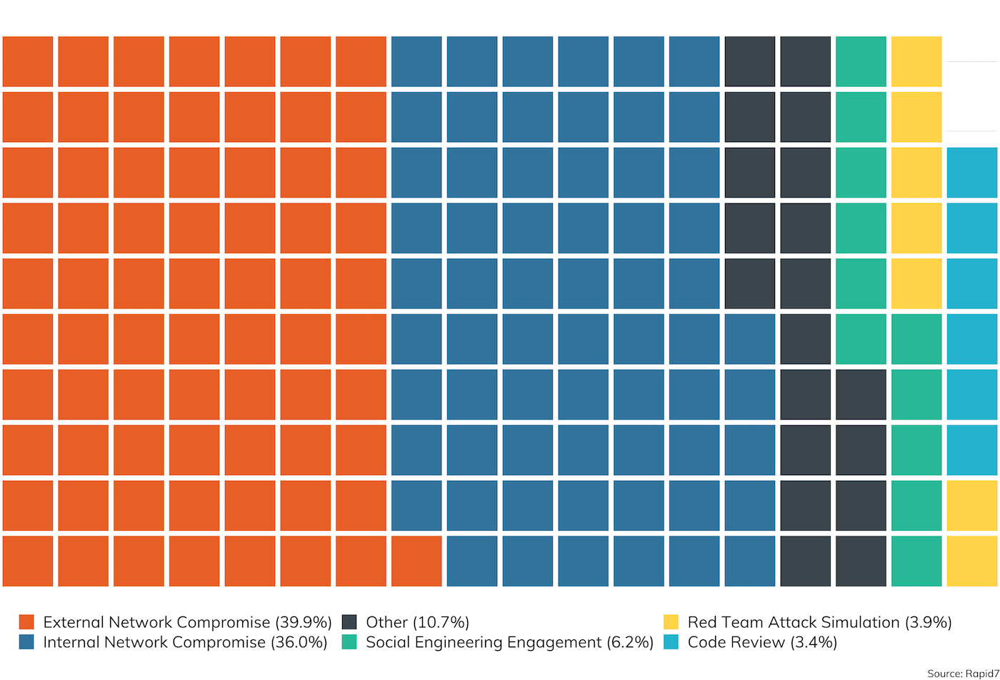
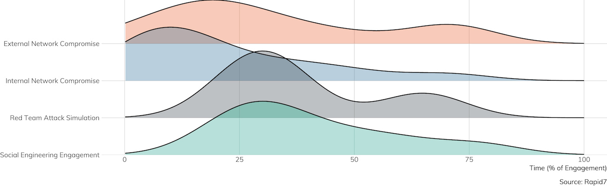
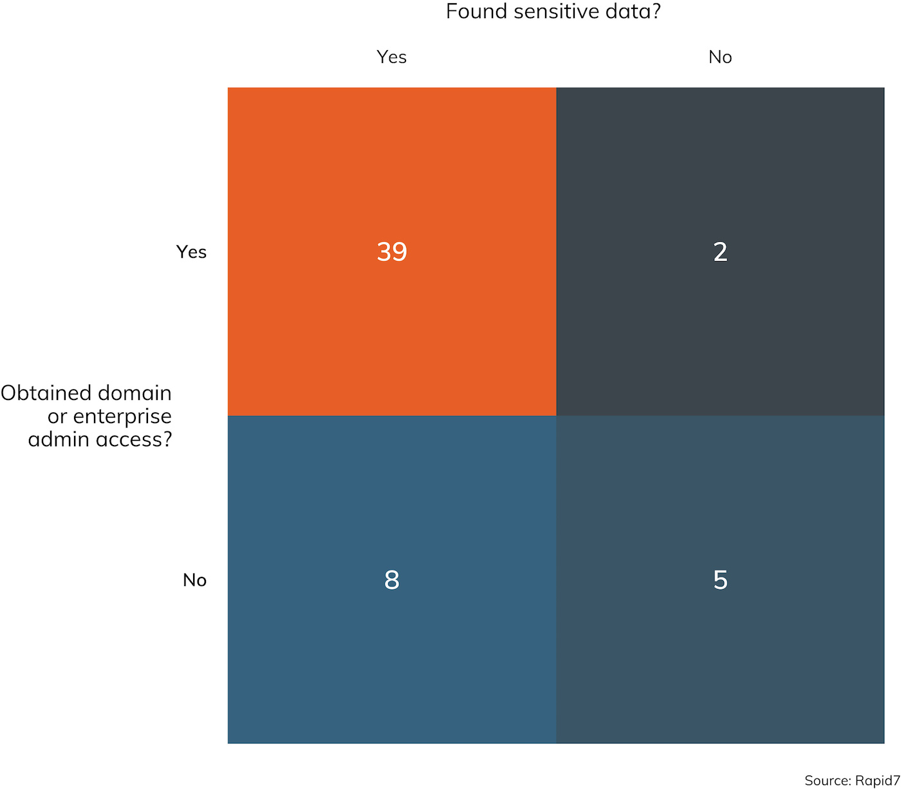
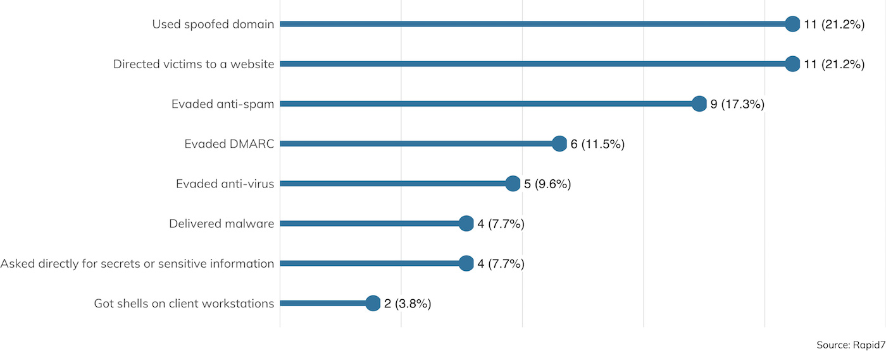
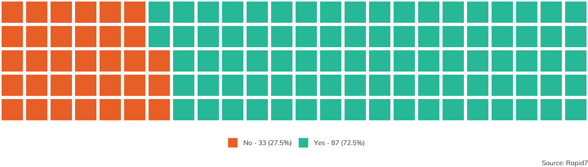
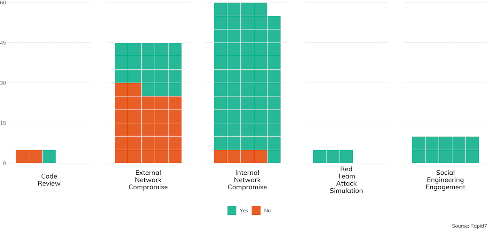
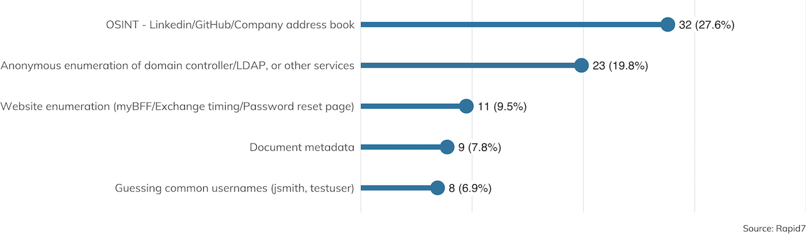
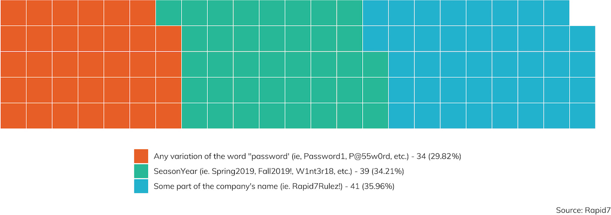
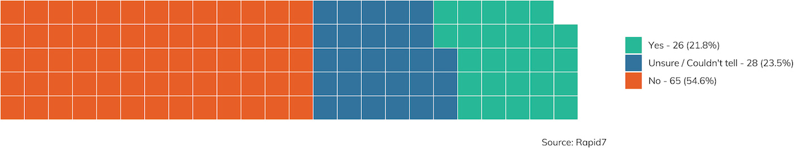
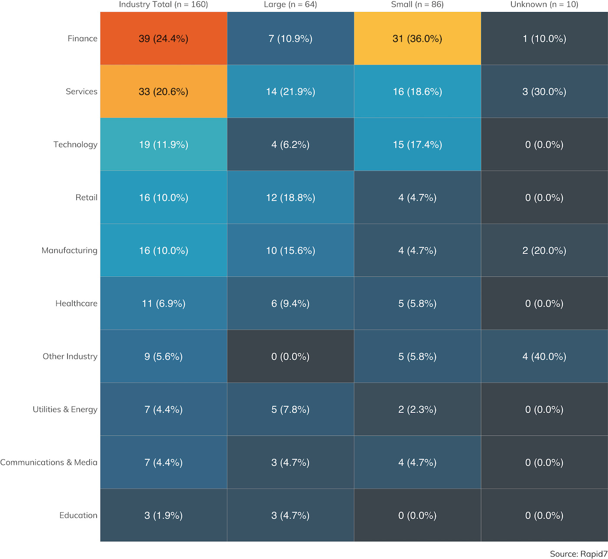

Pen Testers Tell All
Want more Under the Hoodie? Explore confessional videos, an interactive quiz, and more to shed light on the “dark art” of penetration testing.
Introduction
It’s Summer 2019! [1] That means it’s time for our annual installment of Rapid7’s “Under the Hoodie,” a statistical study into the art and craft of penetration testing. Penetration testing remains a fairly occult niche of information security. Its busiest practitioners rarely complete more than 20 or so engagements in a given year, and the findings from those engagements are nearly always held privately under strict non-disclosure agreements. As a result, it’s often difficult for any one person to get a sense of the contours of the overall pentesting landscape. Now in its third year, this report is part of Rapid7’s efforts to demystify what exactly goes on in a typical pen test and offer a view into what both clients and practitioners should expect to see during the course of an engagement.
We have collected data from 180 penetration testing engagements over the nine-month period between mid-September 2018 through the end of May 2019. Since our last report, we’ve produced a brand-new survey of 94 questions, designed to make the collection of high-quality data quick and painless for the pen tester. This survey, which is described more completely in Appendix B, explores not only the usual internal and external network assessments, but also physical intrusions, in-person and electronic social-engineering techniques, and non-production code reviews. Key findings include:
- Most (96%) engagements that involved either a network or application assessment saw at least one vulnerability exposed to attackers, which reaffirms our belief that penetration testing is an essential component of a holistic vulnerability management strategy.
- Password management continues to challenge even the most sophisticated IT security organizations. Nearly three-quarters (72%) of engagements resulted in at least one compromised password (when credential capture was in scope). Of those, 60% were easily guessed passwords, where the pen tester used generic password spraying, known defaults, and easily guessed organization-specific passwords.
- It’s not all doom-and-gloom, though. Basic network segmentation controls between “internal” and “external” networks appear to be generally effective, especially given the ongoing move to the cloud for externally accessible resources. Respondents that started an externally based engagement only gained internal LAN access 21% of the time. Web application-specific engagements rarely-to-never (under 3%) resulted in a total site-wide compromise. Most (over 70%) web applications were hosted somewhere other than the client’s data center, which significantly complicates an attacker’s path from a compromised web application.
With these key takeaways in mind, the rest of this report will examine the data gathered from our most recent season of penetration testing, as well as provide anecdotes drawn from real-world experiences in the field. We expect readers to come away from these pages with a baseline understanding of how penetration testers help organizations identify their own unique (and not-so-unique) IT risks.
___________________________________________
[1] If you find it unsettling to see your “Summer2019!” password mentioned casually in this introduction, it’s time to change your password selection algorithms.
Long-time readers may recall that, in the past, we tended to break up our engagement scopes into two large buckets:
- External assessments, where the pen tester starts off on the internet and targets the client’s web applications, VPN concentrators, file transfer systems, and other internet-facing assets
- Internal assessments, where the tester is mostly focused on things like Windows Active Directory domains, printers and IoT integrations, and other IT infrastructure not (normally) exposed to the internet
While these two broad distinctions are important, we’ve structured our survey for 2019 to account for investigative scenarios that cross the (mostly imaginary) boundaries between “inside” and “outside,” such as electronic and physical social engineering, red team assessments that involve an active defender, web applications that are hosted in third-party cloud environments, and code reviews for mobile applications that are ultimately installed on customer or employee-owned mobile devices. Figure 1 is a breakdown of these top-level considerations of scope performed and recorded for this report.

As we can see here, the traditional “external compromise” test, where the client wants to ferret out their weaknesses and exposures that are exposed to the general internet, is the most popular scoping choice, accounting for just about 40% of the engagements surveyed. This makes sense, since most clients are concerned about external bad actors—the criminal hackers that don’t already have some reach into the internal network and are seeking some kind of leverage over the target to execute whatever criminal enterprise they’re involved in.
However, for the third year running, we also see the gap is closing between external and internal assessments. Among Rapid7’s customer base, 36% of our engagements have a primarily internal network compromise component, only six points behind external. In fact, considering social engineering and code review engagements, that brings the not-just-internet-facing-flavored share up to about 45% of all engagements this survey covers. This warms our hearts as a security advocates, since it speaks to a real commitment to defense in depth. Customers are increasingly aware that the line between internal and external truly is pretty porous, and these customers are very interested in measuring the effectiveness of their internal network security technologies like incident detection and response (IDR) and user behavior analytics (UBA), as well as core network security controls like privilege separation and network segmentation.
Timing Considerations
Along with the scope of what’s to be tested, the other factor penetration testers need to consider is the amount of time contracted to the customer. Over the course of the year, we’ve seen a trend that edges up the average contracted hours for both internal and external to just about two weeks, or 80 contracted hours, with some significant outliers clocking in several hundred hours.

Now, one might argue that the automated attacks that we see routinely across the internet do not really have any time limits—they’re both ongoing and opportunistic, and this doesn’t mesh particularly well with the contracted penetration testing model. However, these sorts of attacks, practically by definition, don’t have a focused reconnaissance and planning phase. They either work or they don’t, and the attacker doesn’t particularly care which targets are vulnerable.
That said, these automated attacks aren’t really what penetration testing is designed to explore; indeed, automated attacks tend to be thwarted pretty well by automated defenses, such as routine vulnerability management (VM) and asset management scanning. Instead, penetration testing is designed to uncover what information technology components aren’t already adequately covered by automated solutions. To that end, a significant portion of the pen tester’s time tends to be dedicated to advance reconnaissance and planning, so they end up looking more like the more significant threats faced by organizations and companies today. Figure 3 shows the percentage of contracted time that is dedicated to this pre-attack planning, per scope.

Not surprisingly, red team exercises, which seek to most accurately simulate an active adversary with an active defender, tend to spend the most time in recon, followed closely by purely social engineering engagements. It takes time to build a profile of the target and come up with solid pretexts supported by believable identities. Even traditional internal and external network assessments require some research work in order to find and understand the domains, network address ranges, and technology stacks in use by the client.
In the end, penetration testing is not merely a point-and-shoot exercise; that job is much better handled by automated VM. Organizations looking for a penetration testing assessment would do well to have their VM house in order before engaging the sophisticated and specialized expertise of a pentesting outfit.
In the world of vulnerability management, vulnerabilities tend to be categorized on three axes on what an exploit of that vulnerability might impact: confidentiality, integrity, and availability. Together, these form the “CIA Triad."[2]
The CIA Triad
Penetration testers are most interested in integrity-centric vulnerabilities, where a successful exploit means that the attacker gets some level of control over the vulnerable application or component. Armed with such an exploit, the attacker gains all sorts of options, such as using the compromised system for ongoing access, impersonating legitimate users and their associated access permissions, or stealing private data stored, received, or transmitted by the affected system. When pen testers talk about “remote root,” they’re talking about an attack that completely compromises the integrity of the targeted service’s underlying operating system.
Confidentiality-specific vulnerabilities, on the other hand, tend to give the attacker access to otherwise private information, but do not give absolute, direct control over the system itself. Such vulnerabilities are certainly valuable to an adversary, since confidential data may include things like passwords, password hashes, or session tokens, which can in turn be used to gain direct access to systems or applications. Confidentiality vulnerabilities can also include more subtle issues, such as the ability to intercept and modify data in transit, but in most cases, upgrading a confidentiality issue into an integrity issue takes some amount of work, and isn’t a straight shot to remote root. Other issues in this category require the attacker to already be in a privileged position on the network to make use of it, as is the case with most cryptography vulnerabilities that affect confidentiality.
The third element of the CIA Triad, availability, tends to be specifically out-of-bounds for pen testers. Few organizations rarely want to invite production outages on purpose, even as part of a testing scenario. Denial-of-service (DoS) attacks, distributed or otherwise, are certainly part of the criminal attacker’s arsenal, but most ransomware attacks today leverage integrity issues to cause DoS. They use integrity vulnerabilities to first gain access to a system, then use that access to encrypt the system’s storage and leave the ransom note. Notable exceptions to this are the so-called “booter and stressor” criminal services, which flood the target’s network with junk traffic periodically, with an offer to stop for a price. Penetration testers tend not to simulate this type of attack, however, since the risk to adjacent and upstream networks is so high.
With this vulnerability taxonomy understood, Figure 4 describes the types of vulnerabilities encountered across all engagement types:

___________________________________________
[2] The exact origins of the CIA Triad are unclear, but they appear in information security texts dating back to at least the 1990s. Any help on tracking down the etymology and first use of this term would be greatly appreciated!
Network Vulnerabilities
Across all internal and external network and code audit engagements surveyed, 96% saw at least one vulnerability reported by the penetration tester. Not all vulnerabilities are created equal, however. With the CIA Triad model in mind, we have seen that for external network findings, penetration testers tend to uncover confidentiality vulnerabilities, such as weak encryption standards or user enumeration issues, while the bulk of integrity vulnerabilities are found and exploited only in internal network assessments.
External Network Vulnerabilities
Figure 5 details the types of vulnerabilities encountered during external assessments over the survey period.

By far, the most common vulnerability finding reported is “Weak Transport Layer Security,” which is the quintessential confidentiality issue. These vulnerabilities point to old or absent encryption standards employed in externally facing resources. For example, a website might not offer any encryption at all (HTTP-only resources or an authentication mechanism that reveals credentials in the clear), or offer weaker cipher suites than those commonly recommended today (40-bit key lengths versus 128-bit key lengths, for example). These vulnerabilities can expose data in transit, such as passwords or other confidential information, to anyone with the ability to eavesdrop on the network connection. Such attacks are quite practical today, especially since the advent of Eric Butler’s Firesheep[3] in 2010.
We also see “Weak password policy” topping the list; this issue allows users to select relatively weak passwords for account access, and is usually discovered through the practice of “password spraying”—more on this later in “Credential Capture,” below. Combined with issues like “OWA Timing Attack,” and “SMTP email address enumeration,” such findings, while information disclosure only, can quickly lead to user account compromises.
Also of note are the “Outdated software” and “Missing patches” issues. When these issues are identified externally, they tend to implicate a failure in VM and asset management.
Taken together, these information exposure issues do tend to be serious enough to report out to the client, but penetration testers are rarely able to exercise these vulnerabilities to traverse the boundary between “external” and “internal” networks, as seen in Figure 6.As it turns out, only about 20% of external engagements ended up with an internal network compromise. This is due largely to two factors. First, client organizations are increasingly embracing external hosting solutions, such as those offered by Amazon AWS, Microsoft Azure, Google Cloud Platform, and other cloud computing providers. Second, as such, there is often no clear path from an external compromise of a networked software component to the client’s internal network.
Such findings tend to be confidentiality only; an attacker can access otherwise private data but cannot leverage that data to establish a presence internally. However, this may be good enough for the penetration tester (or criminal attacker). Imagine a breach that exposes all customer username and passwords but did not expose employee credentials; the fact that the attacker could not access internal network assets isn’t much comfort.
One interesting view of the survey data takes a look at that 20% minority of engagements where the penetration tester was, in fact, able to leverage external vulnerabilities to gain access to internal resources. Figure 7 offers just such a view:

Here, we see that the “Weak password policy” finding jumps to the top of the list. Occasionally (about 4% of the time), the usernames and passwords exposed internally are, in fact, also used for internal network authentication. This leads to a rather quick compromise of the internal network. This is followed by “Outdated software,” and its close cousin further down, “Missing security patches,” which allow for integrity exploitation at a similar rate.
THIS ONE TIME ON A PEN TEST
Your Mouse Is My Keyboard
Investigator: Jesse Gardner | Client Vertical: Healthcare
In one engagement, we were tasked with compromising the internal network of a facility that was used for medical trials and had a laboratory where they worked on the pharmaceuticals used for their testing. The first leg of the engagement was a physical and social engineering test, and while the lab site was intended to be a highly secure physical location, we were able to sneak in by tailgating, quickly diving into open doors, etc. We made short work of the internal network once we had physical access to the datacenter, so, after consulting with our point of contact, we decided to try our hand at getting in remotely without physical access.
There is this tool we like to use called the Crazyradio PA, which is a small software-defined radio (SDR).[4] Combining that with an open source implementation[5] of the MouseJack vulnerability described by Bastille Security,[6] we could perform some pretty cool attacks against wireless keyboards and mice. First disclosed in 2016, the MouseJack vulnerability is still a fairly common issue affecting a wide range of non-Bluetooth wireless keyboards and mice.
Armed with this technique, software, and hardware, we figured if we could get within range of a vulnerable device, we could inject keystrokes, or sometimes even record what a user is typing. After circling the building a few times in a rental car, we indeed found a few vulnerable devices in use on the client's site.
We were able to successfully launch attacks and execute malicious payloads on several systems, which gave us remote access to that organization's computers over the internet—from our rental car in the parking lot. There was no physical entry required; all we needed was to be reasonably close in an unsecured parking lot.
We presented this finding to the client, who used our report to replace their wireless keyboards and mice with cheaper and more secure wired alternatives. It was a great object lesson that even if you have implemented strong physical security and trained your staff to keep an eye out for secure door tailgaters, if your peripherals aren't secure, you might still be vulnerable to targeted, over-the-air radio attacks.
___________________________________________
[3] https://codebutler.com/2010/10/24/firesheep/
[4] https://www.bitcraze.io/crazyradio-pa/
[5] https://github.com/insecurityofthings/jackit
[6] https://www.bastille.net/research/vulnerabilities/mousejack/technical-details
Internal Network Access
Normally (about 88% of the time in our survey results), an internal network compromise starts off with the penetration tester being granted some limited access to the internal network in the form of an ingress point, usually in the form of a standard laptop connected to the internal network, either wired or wireless. This is usually done in order to simulate the scenario where an untrusted party has already somehow associated to the infrastructure in order to speed along the investigatory job of uncovering internal network vulnerabilities.
Occasionally, though, the penetration tester (at the request of the client) will need to first break into the internal network in order to demonstrate any weaknesses in the internal network access controls. In these cases, there are a variety of techniques available and reported by penetration testers. These include:
-
Electronic social engineering (tricking a user into running malware on the pen tester’s behalf on their connected workstation)
-
Physical social engineering (tailgating into the building and finding a live, wired network drop or unlocked desktop)
-
Exploiting an external internet vulnerability to traverse into the internal network
-
Compromising the layer 2 access controls by MAC address cloning
Note that in either case, “access” is defined as merely “associated to the local area network,” and the penetration tester is rarely provided with domain credentials or anything like that; after all, where would the fun be in that?
From Access to Compromise
Once access is obtained, the penetration tester then needs to get some kind of logical access. Nearly all clients are running some version of Microsoft Active Domain, as Microsoft continues to dominate the internal landscape for most organizations.[7] As a result, the types of vulnerabilities and misconfigurations exploited by penetration testers who find themselves on the LAN all tend to be Microsoft-flavored. A breakdown of these vulnerabilities is shown in Figure 8.

As with prior reporting years, SMB relaying remains the No. 1 technique for gaining an initial user foothold in the domain, thanks to the presence of LLMNR, NetBIOS poisoning, and unsigned SMB. Unlike prior years, however, the prevalence of SMB relaying as a viable attack vector is down; only about 15% of engagements were able to take advantage of this once terribly common technique. For contrast, 2018’s report saw SMB relaying being leveraged about 26% of the time. This drop is significant, thanks to increased awareness of the need for SMB signing and the gradual disappearance of older SMB clients that do not support signing. However, it’s important to note that current versions of Windows 10 still do not enable signing by default,[8] so it’s up to domain administrators to follow Microsoft’s advice and manually enable this important integrity feature.
Next on the vulnerabilities reported list is “critical security patches missing” at about 11% of sampled client sites. Exploiting vulnerabilities that do have patches available is pretty bread-and-butter penetration testing, and Conficker (MS08-067) and EternalBlue (MS17-010) are two of the most notorious Windows vulnerabilities as of the time of this writing.[9] Both vulnerabilities are exploited by reliable Metasploit modules, and checking Windows hosts for these vulnerabilities is pretty standard practice onsite, as illustrated by Figure 9.

While it’s nice to see that MS08-067 is slowly fading from the internal network, it’s sobering to note that it’s also nearly 11 years old. EternalBlue is probably the most written-about vulnerability in mainstream media, and yet, if Conficker’s history is any guide, this issue will be readily available in a strong minority of penetration testing engagements for several years to come.
Rounding out the top issues reported is “cleartext credentials found in memory.” Unfortunately, this is a rather intractable problem in modern domain-based computing. Given privileged access to a workstation, the art of recovering locally stored passwords and replayable password hashes is indispensable to penetration testers and criminal attackers alike. While a number of creative defensive techniques are described (nearly all of which are helpfully collected by the Blue Team blog[10]), these solutions are non-default, not well-publicized, and tend to impact the common use case of using cached credentials when a domain controller is unavailable to validate local logins using domain credentials. That said, organizations would do well to ensure through periodic GPO pushes that domain administrator credentials, at least, are not cached in local memory on most client workstations.
___________________________________________
[7] Perhaps next year will be the Year of Linux-based LDAP+Kerberos, but this configuration is exceedingly rare to non-existent in the sampled client base.
[9] We’re still waiting to see where “BlueKeep,” the RDP vulnerability tracked as CVE-2019-0708, ends up on the notoriety scale.
[10] https://medium.com/blue-team/preventing-mimikatz-attacks-ed283e7ebdd5
Lateral Movement
One system compromise is a good start for any penetration test, but of course, that’s usually just the beginning. Once a foothold is gained, the next task is to leverage that access to get to more and better systems across the internal network. Figure 10 details the methods typically used by pen testers to extend their reach across the enterprise in search of confidential data and better domain-wide access.

Interestingly, it seems that PowerShell is definitely falling out of favor, at least among the surveyed pen testers. PowerShell restrictions are becoming increasingly common in enterprise Windows networks, and while attackers got a lot of mileage in years past with PowerShell, those techniques seem to be falling by the wayside in 2019.
That said, Windows Management Instrumentation (WMI) and PsExec, two far older Windows remote administration technologies, continue to remain at the forefront in lateral movement techniques. Some of the most successful Windows worms in recent memory also leverage these interfaces, so it’s no wonder our simulated attacks do the same.
Watch Out for Remote Desk Protocol (RDP)
Of special note is the presence of RDP. In June 2019, the U.S. Department of Homeland Security’s Cybersecurity Infrastructure Security Agency (CISA) issued a bulletin warning of imminent threat from the “BlueKeep” Windows RDP vulnerability,[11] aka CVE-2019-0708. This is a serious vulnerability that stretches all the way back to Windows 2000, and older Windows machines that offer RDP in a modern network are often integrated in hard-to-patch devices, such as specialty IoT equipment, point-of-sale systems, and medical gear.
At the time of this writing, there is not a widely available remote code execution (RCE) exploit for this vulnerability, but we do know that at least a handful of both government and private organizations do have one. So, another widespread attack seems almost inevitable. We’re hopeful that this will force better patching among RDP endpoints, but, as we saw above with the presence of EternalBlue and Conficker vulnerabilities, we expect RDP to become a favored target for both lateral movement and RCE for many pen testers for many years to come.
___________________________________________
[11] https://www.us-cert.gov/ncas/alerts/AA19-168A
Goals and Objectives in the Local Network
While not every engagement has a stated goal of achieving domain or enterprise administrative access, all internal engagements typically have a goal involving proving access to sensitive data. In engagements where an internal network compromise was pursued, Rapid7 penetration testers were able to achieve domain administrator access (or equivalent) just about 76% of the time, and otherwise “sensitive information” was collected 87% of the time. These appear to be pretty typical “win rates” for penetration testers—they are in range of the survey results reported in prior years and considering the types of vulnerabilities pen testers run into as described above.
 In fact, the intersection between the questions, “Did you obtain Domain or Enterprise Admin access?” and, “Did you find some sensitive data?” pretty clearly shows that one tends to lead to the other. As one might expect, when Domain Admin or Enterprise Admin access is achieved, it’s rather difficult to keep sensitive data secret for long. Figure 12 illustrates the relationship between these two objectives.
In fact, the intersection between the questions, “Did you obtain Domain or Enterprise Admin access?” and, “Did you find some sensitive data?” pretty clearly shows that one tends to lead to the other. As one might expect, when Domain Admin or Enterprise Admin access is achieved, it’s rather difficult to keep sensitive data secret for long. Figure 12 illustrates the relationship between these two objectives.
While it’s technically possible to keep sensitive data out of the hands of a legitimate domain admin, network and data segregation practices in use today rarely bother with such intricate and complex internal security solutions. This is not a value judgement—architecting such a computing environment is nearly impossible, and it’s much, much easier to simply trust domain admins to not be malicious insiders. In the end, protecting those domain admin credentials from misuse is paramount for any IT security organization.

Watch Out for Null Sessions
Finally, penetration testers are always on the lookout for domain-available null sessions and tend to find them available about half the time, as Figure 13 shows.
 Null sessions, in and of themselves, tend to get classified into low-priority “information-only” vulnerability assessments, but penetration testers leverage them primarily to test for mapped drives and use them to exercise credential stuffing and guessing attacks on the internal network. In years past, null sessions were almost universally available, so the fact that they’re only found about half the time says that more and more enterprise IT administrators are taking them seriously, or segmenting their networks in ways that end up neutering SMB-based traffic entirely.
Null sessions, in and of themselves, tend to get classified into low-priority “information-only” vulnerability assessments, but penetration testers leverage them primarily to test for mapped drives and use them to exercise credential stuffing and guessing attacks on the internal network. In years past, null sessions were almost universally available, so the fact that they’re only found about half the time says that more and more enterprise IT administrators are taking them seriously, or segmenting their networks in ways that end up neutering SMB-based traffic entirely.
Web Application Vulnerabilities
Penetration testers are jacks-of-all-trades when it comes to technology stacks, relying on at least a working expertise for all sorts of operating systems and programming languages. But some technologies, such as Microsoft Active Directory and Microsoft Windows, are fairly fundamental when it comes to effectively demonstrating common vulnerabilities and misconfigurations. Another broad bucket of skills pretty much required for this kind of work are web application frameworks. Most medium to large organizations have a fairly rich web application environment today, often deploying two or more distinct frameworks for getting business done. Figure 14 describes this situation rather succinctly.

As we can see here, ASP.NET is still going strong in the enterprise web application space, along with JQuery as a JavaScript framework. The “something else” categories for each, though, speak again to the pen testers’ requirement to apply their general security skillset to sometimes unfamiliar implementations between 15% and 20% of the time.
THIS ONE TIME ON A PEN TEST
Paging Doctor Hackerman
Investigator: Nick Powers | Client Vertical: Healthcare
I was testing wireless and internal network vulnerabilities at a system of eight hospitals, and the wireless network specifically seemed to be fairly locked down. They had employed EAP-TLS, which allows devices to connect to the corporate wireless network using strictly certificate-based authentication in common deployments. This high-security configuration is still fairly unusual to see implemented consistently, since not every wireless device is technically capable of complying with it. In other words, it’s common to see exceptions made to this authentication policy for certain devices.
However, a full day or two of testing went by before we determined the standard methods of exploitation were just not going to work, at least against the employee workstations that were nearby at the time. It looked like EAP-TLS really was pretty bulletproof on these sites. I went for a walk around the hospital halls to see what other types of wireless devices I could find. While walking past the entrance to the Intensive Care Unit (ICU) in a particular hospital, I saw MAC addresses matching that of pagers (presumably used by the nurses and doctors) connecting and interacting with the corporate WiFi. I put my laptop and antenna in my backpack after deploying an evil twin of the corporate wireless, and headed back to the entrance of the ICU. After loitering a discreet and unobtrusive distance from the ICU for 15 minutes or so, I returned to a desk to discover the domain user and password hash leveraged by the pagers for authentication. This captured hash turned out to be pretty quick to crack, so with the cleartext password and username in hand, I was on the corporate network.
The internal network had a large amount of non-standard devices—namely, networked medical equipment. One of these medical devices, an unused X-ray machine, was running an outdated version of Windows. The old and forgotten X-ray machine had been previously accessed by a privileged Active Directory user with Domain Administrator privileges, which allowed for the cleartext credentials of that user to be recovered from memory. That X-ray machine gave us the keys to the entire network.
This is all due to the fact that web application vulnerabilities are a common and distinct source of vulnerabilities and tend to be featured prominently in findings during both internal and external engagements. Figure 15 shows what kinds of web app vulnerabilities were uncovered where web apps were in scope.

The good news is, web app findings tend to be information disclosures, falling in the familiar “confidentiality” category of the CIA triad. Topping the list are username enumeration issues, generic “information leakage,” missing HTTP Strict Transportation Security (HSTS) headers (which can lead to encryption failures in transit), and insecure cookies. All of these have the potential to be abused by attackers to learn more about the target organization, its users, and potentially, session tokens that can be turned around and used to impersonate authenticated users.
Other familiar issues involve clickjacking, cross-site scripting (XSS) and SQL injection (SQLi). These are the issues that tend to lead to enhanced privileges on web applications, either as regular user account access or privileged application administrator accounts. However, the silver lining here is that SQLi seems to be getting more rare as a finding. Common web application frameworks make it difficult for SQLi bugs to make it into production, since common tasks tend to be automated through framework-based “syntactic sugar” that makes database operations easy to write and read while also protecting the developer from accidentally SQL injecting themselves in the foot. “Rare” is not synonymous with “extinct,” of course. SQLi has the potential to creep back into applications whenever developers need more complex functionality not offered by a framework or when a web application is being built from scratch, so DevOps teams are advised to closely examine any custom SQL-based code for potential abuse.
In the end, as enterprises continue to move to cloud hosting providers such as Amazon AWS, Microsoft Azure, and Google Cloud (the three most popular hosting providers seen in our sample), the job of the penetration tester will be increasingly focused on web apps and will require some recon expertise in order to find and evaluate these applications (since they won’t be easily scanned for in the client’s normal IP ranges).
THIS ONE TIME ON A PEN TEST
Your Data Is in the Wind
Investigator: Trevor O'Donnal | Client Vertical: Healthcare
It was an early Monday morning in the dead of winter. I had just finished my breakfast, showered, made a cup of hot cocoa, and sat down at my computer to start a new week of hacking. This week, I was assigned to test the website of a company that handled medical records. Healthcare providers and patients could access records through the web portal. It was super important that the site be secure, since medical records provide a wealth of information that makes identity theft easy and are highly prized in the internet underground.
I started out as I always do, poking around the site, checking out its functionality, and making notes of areas that are likely to be vulnerable to various website weaknesses. I spent about 15 minutes checking things out. Then, I decided to manually test a few areas that looked promising for SQLi. The first thing I tested was the login form. I placed a single apostrophe in the username field and a bogus password in the password field and hit the “Enter” button.
SQLi has been harder to find lately, so I didn’t expect much to happen. Developers have been trained against it for years, and web application frameworks make it hard to implement by accident. So, I was very shocked to see a SQL error pop up onto my screen. It was very detailed, pointing out the specific area of the underlying database query that contained the error. The error message also helpfully exposed the majority of the query, making it trivial to devise a more targeted attack.
It took a second to register what I was seeing. When I finally got a hold of myself, I tried a simple authentication bypass, which worked. I was now authenticated as the site administrator without even knowing the password. I owned the site, practically by accident, and I hadn’t even finished my morning cocoa. Rather than play around with my new privileges, I decided to try some more exotic queries. Five minutes later, I was in the process of dumping the entire back-end database, including all the personal information it contained.
I contacted the client to verify whether this site was live if the data it contained was live production data, as mentioned on our kickoff call the week before. He confirmed once again that it was, so rather than continue with this avenue of investigation, I scheduled a conference call with him immediately. After all, this was people’s personal health information we were talking about.
On the call, I demonstrated what I had found and how easy it was for anyone on the internet to do the same. I stressed the importance that this be dealt with right away and offered my help. The client ended up shutting down the website completely for emergency maintenance, and we spent the next couple days working with the site developers to get the problems fixed before putting it back into production.
Rounding out the usual engagement activities penetration testers perform are social engineering techniques, the most popular of which is email-based electronic social engineering (ESE). Figure 16 details the types of techniques employed.

The top technique in play is the usage of spoofed domains, which are nearly always the domain of the client themselves. Unfortunately, most corporate organizations today are behind on their implementation of Domain-based Message Authentication, Reporting & Conformance (DMARC). This jargony mouthful is a DNS-based technical specification that seeks to make it difficult for external attackers to send mail claiming to be from a protected domain. While it was originally deployed in order to assure customers that a given organization’s email is, in fact, sourced from the domain claimed, it turns out that DMARC is also a wildly effective countermeasure against internal phishing as well. After all, if attackers can’t believably source email from “rapid7.com,” they are forced to instead claim to be from a distinctly different domain, like “rapiid7.com.” Of course, human eyeballs have a tendency to skip over slight misspellings (including this paper, we’re sure), but DMARC does raise the bar for attackers and can go a long way toward preventing phishing campaigns before they start.
Modern email clients—which, these days, tend to be webmail applications—are pretty good at basic anti-spam and anti-malware on the server side, which is why the No. 1 payload for phishing emails is a call to action to click on a link leading to a malicious URL. Usually, penetration testers like to use mock-ups of otherwise familiar login screens, such as a Google Apps or Outlook 365 login page, in an effort to extract usernames and passwords.
Crafty penetration testers can be more subtle, however, and mock up familiar web applications that a little reconnaissance will show that are already in use at the client site. For example, a TXT DNS record for rapid7.com may show an entry for “atlassian-domain-verification,” which indicates that Atlassian products like Jira and Confluence are in use. After a cursory LinkedIn search, an attacker could send a well-crafted, targeted phishing email pretending to be from a lead application developer to more junior developers, urging them to “check out this P0 Jira ticket” and land them on a malicious site.
Of special note is the role IDR plays in a typical engagement. While detection, response, and (ultimately) isolation is a core component for any red team or social engineering engagement, it’s only a factor in about half (52%) of engagements that involve a network compromise. This is a matter of client expectations—after all, if the client knows they don’t have mature detection and response capability, it’s kind of pointless to exercise it, so the penetration tester should concentrate on finding and exploiting vulnerabilities without having to worry about IDR. On the other hand, once deployed, it would be kind of silly to not rely on automated and manual IDR whenever the client can. IDR software and training is an investment not taken on lightly, so in order to more accurately model attacker behavior, penetration testers should be subject to the same rules as real criminal attackers.
Figure 17 demonstrates how effective penetration testers in our study are in avoiding detection, either before an objective is achieved or after.

Respondents were detected only about 20% of the time in environments where IDR was in play before gaining internal access to the local network, and about 53% of the time sometime after internal access was achieved. These detection rates are pretty good, considering prior years’ studies,[12] and anecdotal stories of penetration testing super-ninjas. Of course, pen testers aren’t usually in the business of deleting logs and covering their tracks after an objective is achieved; after all, that would make the after-action reporting more difficult, so consider these right-hand results with a grain of salt when comparing to likely real-world criminal attackers.
___________________________________________
[12] In fact, this is the first year we made the before/after distinction, and the first year we explicitly surveyed whether detection capabilities were in scope. Without this data, prior years’ “evasiveness” figures were somewhat inflated; considering out-of-scope detection, this year’s detection rate is around 65%, which is in line with 2018’s report.
Regardless of the scoped engagement type—internal or external network compromise, social engineering, red team, or even code review—credentials tend to be in scope for penetration testers to nab and reuse. After, why bother with all this complicated vulnerability exploitation when you can just pretend to be a legitimate user to get inside information? As it happens, about 73% of the time, at least one credential is scooped up by pent esters on an engagement, with varying levels of success depending on the specific assessment type.


Gathering Usernames
The first order of business in any credential capturing exercise is figuring out which usernames are valid for a given site. Usernames are rarely secret and tend to follow familiar patterns, such as firstname_lastname@domain.com, FLastname@domain.com, or FLast@domain.com. Filling in these patterns is commonly the job of open source intelligence (OSINT) work, as shown in Figure 19.

Two other techniques mentioned in Figure 19 involve username enumeration, either through local network access or externally available applications. Username enumeration techniques are tried-and-true methods for beginning to build a target list for a given organization, but even though these weaknesses are literally the textbook example of CWE-203, “Information Exposure Through Discrepancy,”[13] there is still some disagreement among technology providers that username enumeration is a weakness at all. The Microsoft Exchange development team, for example, doesn’t consider timing attacks against usernames to be a serious security issue[14] since usernames aren’t secret, while other major providers like Google take steps to limit the number of usernames that can be enumerated quickly.
___________________________________________
[13] https://cwe.mitre.org/data/definitions/203.html
[14] https://grimhacker.com/2017/07/24/office365-activesync-username-enumeration/
Password Guessing
Once a suitable list of usernames is created, passwords are next up. Now, there is no disagreement that passwords are intended to be both unique and secret, but unfortunately, human users are still pretty terrible at inventing passwords, while penetration testers[15] are pretty good at guessing those terrible passwords. Figure 20 details the sources of valid passwords, as collected on surveyed engagements where credential theft was in scope.

Taken together, password spraying (trying passwords and password patterns common across all organizations), guessable organization-specific passwords, and common default passwords together account for the most common source of valid passwords, which all indicate that IT organizations would do well to consider either assigning random passwords to their users or strongly encouraging users to use a password manager for password generation and usage.
Notably, assigning random passwords through a password management application would be worlds better than merely enforcing password complexity and rotation rules. It is common today to operate in an environment where passwords must include an uppercase letter, lowercase letter, a number, and special character, and change every 90 days, but such password restrictions tend to reduce password complexity, since humans will game this system and independently invent schemes like “Summer2019!” followed by “Autumn2019!” over and over again.
Password Cracking
Password cracking—the act of taking a list of password hashes and figuring out what passwords generate those hashes—made a surprisingly strong showing in this year’s survey. Obtaining a hash file is the No. 1 reported source of password material this year, with more specific sources of hashes such as challenge-response traffic and /etc/shadow also being reported. Here too, though, we find that if given the chance, many of these cracked passwords could just as easily been guessed with a little time and luck.

We also surveyed where password hashes came from. Unsurprisingly, most were from Microsoft Windows sources, as seen in Figure 22.

Of special note are the LM Hashes recovered. These hashes are deeply insecure, break some fundamental cryptography best practices, and have long since been deprecated by Microsoft in favor of stronger hashing mechanisms. But even though they serve basically no purpose in Microsoft environments that have been upgraded within the past 10 years, they doggedly persist, just waiting for attackers to get a hold of them. Domain administrators are strongly urged to kill these LM Hashes with fire, following the advice provided by Microsoft on how to disable LM Hash storage.[16]
___________________________________________
[15] Also, technically human. Usually.
THIS ONE TIME ON A PEN TEST
Missed a Spot
Investigator: Ted Raffle | Client Vertical: Utilities & Energy
Penetration testing is a valuable tool for clients to identify and remediate vulnerabilities and misconfigurations, especially when strong security controls and threat mitigation can miss the mark when only one or two systems fall through the cracks.
Like many internal network penetration tests, this one started by looking for NetBIOS Name Service (NBT-NS) and Link Local Multicast Name Resolution (LLMNR) requests to exploit. These auxiliary name resolution services can be used to resolve hostnames that are not found in DNS, which vulnerable hosts transmit out to the local network in broadcast requests and multicast requests. By sending poisoned responses to these requests, which claim the desired host name, a malicious actor can receive NetNTLMv2 password hashes from SMB connections.
Testing across two different local networks, I identified six hosts making NBT-NS requests. Among these hosts, though, poisoning attacks resulted in receiving SMB connections and password hashes for just one domain user. One of the most immediate risks of obtaining these password hashes is that they could be cracked. However, I was unable to crack the one NetNTLMv2 password hash that was obtained, so it must have been a pretty good, uncommon password. Good for them!
That said, another risk of being able to solicit these SMB connections is SMB relay, where that challenge-response authentication traffic can be replayed against other hosts without the password needing to be cracked. Using RunFinger.py, I found just three SMB hosts that did not require message signing, and only one of which was actually joined to the domain.
Leveraging SMB connections from the one user account that was affected by NBT-NS poisoning, and using Smbrelayx[17] to relay that connection to the one domain host that did not require SMB message signing, I was quickly able to retrieve password hashes for local user accounts from that host.
These NTLM password hashes are not challenge-response pairs, and can be used for ‘pass-the-hash’ authentication, where the uncracked password hash can be used as a stand-in for the actual password for network-based authentication. I was able to use these same local administrator credentials on nearly half of the SMB hosts in scope for the assessment. From there, it was quick work to retrieve cached plaintext passwords and password hashes with Mimikatz, a set of common local password recovery tools, which resulted in the discovery of a cached NTLM password hash for one of the domain administrators. Win.
Returning to cracking, now armed with the NTLM password hashes for all of the domain users, I still had very limited success. Valid credentials were only discovered for three working user accounts. While these accounts were enough to then find sensitive documents in file shares and SharePoint, the password cracking results showed that the client had a healthy culture of strong password generation among nearly the entire user base. When discussing these results during an onsite debrief, the client explained that most of their users have smart cards and long, randomly generated passwords. But, despite these strong passwords and very limited findings on most hosts, this engagement showed that just a handful of missed systems can still allow a malicious actor to gain a foothold using common attack techniques.
___________________________________________
[17] https://github.com/SecureAuthCorp/impacket/blob/master/examples/smbrelayx.py
Privileged Accounts
Regardless of the mechanisms of defining discrete levels of privilege, accounts typically fall into the category of “user-level” accounts and “privileged” accounts. The former are used by people (and rarely, services) who don’t need or want enhanced privileges on a given computer; they can’t install system-altering software by themselves, delete logs, or otherwise affect the overall security of the host operating system. The latter, in contrast, are used by people (and often, services) who do need these rights; they’re typically administrator accounts or otherwise have unusual levels of control over the authenticating system.
Figure 23 describes how often privileged accounts were obtained, with nearly 80% of those privileged accounts being, in fact, domain administrator or an equivalent.

Account Lockouts
One of the most common defenses against online password spraying are account lockouts—after a (usually short) period of time, multiple guesses against an account result in an account lockout (usually forever, in most corporate environments, until a call is made to the IT helpdesk).[18] Of course, criminal attackers and pen testers alike are well aware of this technique and tend to carefully stay just below the lockout threshold, as described in Figure 24.

___________________________________________
[18] Soapbox time: Even implementing an account lockout of only five minutes will stymie virtually all but the luckiest online guessing, presuming the passwords being guessed at don’t include the commonly sprayed passwords mentioned above. An authentication scheme that specifically forbids these sprayed passwords, combined with a short lockout time, will not only improve security, but improve the user experience for the occasional lost or forgotten password.
Multi-Factor Authentication
A more recent credential control is two-factor authentication (2FA), also sometimes known as multi-factor authentication (MFA). After a password is correctly entered, the user is challenged for an additional value. This is usually a short series of algorithmically generated numbers based on a shared secret between the 2FA device and the authenticating computer. Some organizations deploy this solution by either issuing employees with a purpose-built 2FA device, or by leveraging the smartphones employees use, which may be personally owned devices.
While 2FA continues to grow in popularity in consumer websites, it is still rare to find it in the field, as seen in Figure 25. That said, the definitive “yes” answer was reported about 22% of the time, a significant increase over last year’s 15% finding of 2FA. This is a great trend to see for defenders.

In this minority of client sites where 2FA was enabled, was it effective? Alas, we’re only talking about 26 cases, so it’s hard to say with certainty given this small sample size. With that caveat in mind, it’s a tentative “yes.” About 65% of the time, it was effective in preventing the pen tester from logging in, even when a password was available. This finding is still pretty weak, though. SMS and email interceptions were used onsite in a few cases to bypass 2FA, but most often, the penetration tester was able to find an alternative authentication mechanism that did not require 2FA at all. Many applications are still trying to figure out how to live in a world with 2FA, and among them are remotely accessible email systems. 2FA on a primary login screen is better than nothing, but it really is only effective when all avenues to authenticating a particular account enforce 2FA.
THIS ONE TIME ON A PEN TEST
Nerds in the NERC
Investigator: Jonathan Stines | Client Vertical: Utilities & Energy
We were performing a physical and social engineering test on a major power plant and were specifically tasked with testing their employees' security awareness. We performed reconnaissance and found an IT manager who worked at the plant as well as his phone number.
I walked in to their front entrance, where a security guard was waiting at the front desk. I told her I was a network technician and was there to perform wireless testing, explaining the IT manager was the person I had been working with. She said she had not heard anything about wireless testing. I told her we had been performing testing at several other locations, and rattled off the addresses for believability, explaining to her that he would just have me tell him to call whoever was working the front desk when I arrived. She said okay, and agreed to have him call her, giving me her phone number.
I stepped out into the parking lot and called her, spoofing the IT manager’s phone number so it would look legit on the caller ID. I said he (meaning me) needed access to the IDF closets, data center, as well as the NERC CIP control rooms at the facility. This turned out to be an easy sell—she agreed to get him (me) all squared away.
I walked back in, and she paired me up with someone from the information security team who was unaware of our physical testing to escort me around the facility to do “wireless testing.” With our access, we got into all areas of the building, including the control room and data center. Win.
Pen testers do usually "win" in that they usually reach the assessment's named objective, be it internal access from the outside, a loss of confidential data, or domain admin access. Specifically, external penetration tests result in some kind of internal access about one-fifth of the time, and internal penetration tests usually result in either domain admin access (75.9% of the time) or a sensitive data breach (87% of the time). Realizing this, some may feel like all hope is lost when defending against a sophisticated and determined attacker, so what's the point in securing anything?
In the face of such despair, though, we should take a look first at the optimistic interpretation of these results. Somewhere around 15% to 20% of the time, the penetration tester is pretty well-thwarted by the existing controls, which demonstrates that the client under test is doing a pretty great job at securing the things they care to secure.
Secondly, the ultimate job of the penetration tester is to ferret out those dark, cobwebby corners of the infrastructure where existing controls have suffered a silent (or not-so-silent) failure. After all, if an organization is having serious trouble with patch management and web application hardening, they are probably not ready for a penetration test; what they need is a thorough vulnerability assessment to identify the “easy” targets before they think about hiring a consultant to tell them where things went sideways.
With that said, the way to “win” your next penetration test, as a defender, would be to hit those areas most commonly and successfully exploited by attackers:
- First and foremost, patch management is the price of admission to network security. Don’t be in the 30% bucket of organizations still vulnerable to old, well-known vulnerabilities like MS17-010 (Eternal Blue). Without a robust and comprehensive VM strategy, nearly all penetration tests are going to tell you that this is where you need to focus first.
- If you want to really impress (and infuriate) your penetration testing consultant, have a strong culture of password management in play at your organization. There are several solutions out there, but in the end, if you can get your user and service accounts on a set of random and long passwords, all the usual credential spraying will come to naught.
- Both of these “first” strategies rely on continuous monitoring for new assets and new services popping up on your network. All the vulnerability and password management in the world won’t help you if you have some forgotten piece of gear hanging out on your network with default “admin/admin” credentials, especially if it has some kind of write access to otherwise secure systems. “Scan thyself,” is the first commandment of network security. Don’t be afraid to scan around for your weakest link during the other 50 weeks when the pen tester isn’t onsite.
- Counter-social engineering training can be a fun way to spend a Friday afternoon, filled with both trust exercises and building workplace camaraderie while figuring how to be polite but firm in the face of social engineering attempts. With all these technical controls in place, the weak spot in any organization ends up sitting behind a keyboard or in front of a locked elevator. As organizations increasingly turn to The Cloud for day-to-day IT services, criminal attackers and penetration testers alike tend to rely on email-based phishing campaigns and in-person and over-the-phone smooth-talking.
Appendix A: Client Demographics
For client demographics, we record each client’s size and industry vertical. A company is considered “large” if it has over 1,000 assets in scope; otherwise, it’s “small.” Our sample set for this research consisted of nine identified industries: Communications & Media, Education, Finance, Healthcare, Manufacturing, Retail, Services, Technology, and Utilities & Energy, along with “Other and N/A.”
Of the 160 clients (some clients were tested more than once during the survey period), our client demographics slant toward Financial (with 39 represented) and Services (at 33), with a pretty even 53.75% to 40% split favoring smaller organizations (not counting the 10 organizations where sizes were not recorded). Figure 26 lays out these demographics succinctly.

Appendix B: Survey Questions and Response Rate
Click here for a full list of survey questions and response rates.
Rapid7’s Global Consulting practice provides industry-recognized consulting and assessment engagements that provide peace of mind, clarity, and guidance for your security program. Our managed and consulting services extend the reach of your team, while our industry research, reports, and open source tools constantly feed the Insight cloud—and you—with new insights.
Rapid7 consultants have extensive experience building and managing security programs, with expertise in vulnerability management, fraud detection, penetration testing, threat intelligence, incident response, red team programs, and more.
Rapid7 is advancing security with visibility, analytics, and automation delivered through our Insight cloud. Our solutions simplify the complex, allowing security teams to work more effectively with IT and development to reduce vulnerabilities, monitor for malicious behavior, investigate and shut down attacks, and automate routine tasks. Over 7,900 customers rely on Rapid7 technology, services, and research to improve security outcomes and securely advance their organizations. For more information, visit our website, check out our blog, or follow us on Twitter.